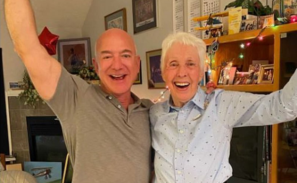

Джефф Безос пригласил в полёт на New Shepard Уолли Фанк
Основатель компании Amazon и богатейший человек планеты Джефф Безос пригласил полететь с ним в космос 82-летнюю американскую летчицу Уолли Фанк. Об этом он сообщил в Instagram. Безос рассказал, что Фанк была одной из лучших в группе «Меркурий-13» (программа подготовки женщин-астронавтов в 1960-х годах для полетов по первой пилотируемой космической программы США).
«Никто не ждал дольше нее. Несмотря на завершение подготовки, программа была отменена, и никто из 13 женщин не полетел в космос. Пришло время. Добро пожаловать в команду, Уолли. Мы рады, что вы полетите с нами 20 июля в качестве почетного гостя», — написал миллиардер. В прикрепленном к посту Безоса ролике бизнесмен описывает Франк предстоящий полет и спрашивает, что она скажет на этот счет. Летчица ему отвечает: «Что я могу сказать. Это лучшее, что случалось со мной в жизни!».
После отмены программы NASA Фанк работала летным инструктором, а затем стала первой женщиной-следователем Федерального управления гражданской авиации (FAA) и занималась расследованием авиакатастроф.
Безос объявил о решении отправиться в космос в начале июня. Миллиардер рассказал, что это было мечтой всей его жизни. Он отправится в суборбитальный полет на созданном его компанией Blue Origin корабле New Shepard.
Еще одним напарником по полету станет брат Безоса Марк. «Величайшее приключение вместе с моим лучшим другом», — говорил основатель Amazon. Всего в полет на New Shepard 20 июля отправятся четыре пассажира.
Еще одно место в космическом корабле разыграли на аукционе. Победитель выкупил право отправиться в космос за $28 млн, его имя объявят позже. В торгах, объявленных Blue Origin, приняли участие около 7,6 тыс. человек из 159 стран.